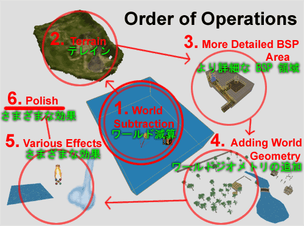
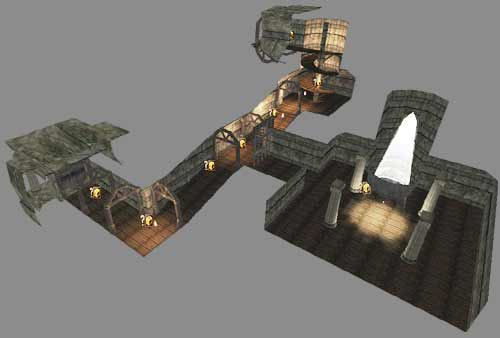
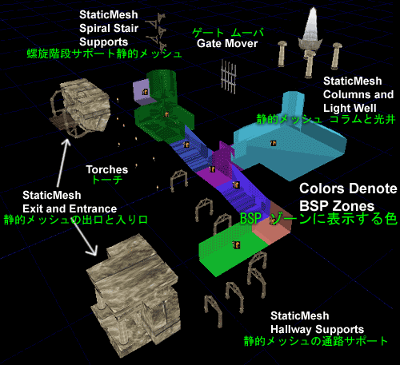
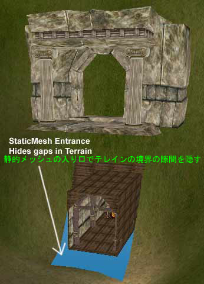
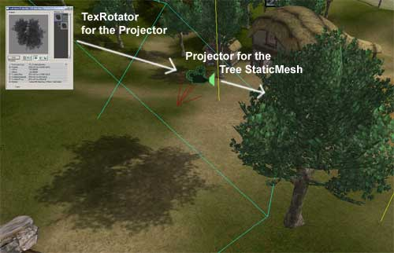
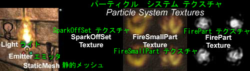
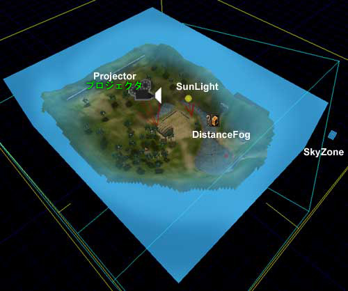
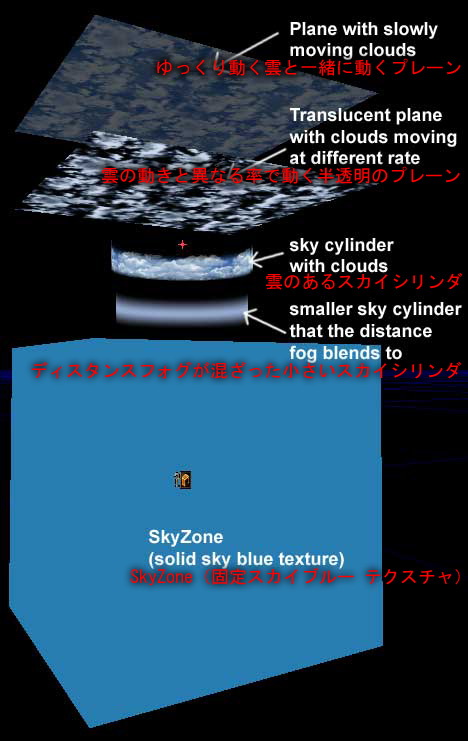

UDN
Search public documentation:
BreakAwayExampleJP
English Translation
한국어
Interested in the Unreal Engine?
Visit the Unreal Technology site.
Looking for jobs and company info?
Check out the Epic games site.
Questions about support via UDN?
Contact the UDN Staff
한국어
Interested in the Unreal Engine?
Visit the Unreal Technology site.
Looking for jobs and company info?
Check out the Epic games site.
Questions about support via UDN?
Contact the UDN Staff
分離の例
ドキュメントの概要: ここではビジュアル解説を交え、さまざまな Unreal 要素の組み合わせでシーンを作成する方法を説明します。 ドキュメントの変更ログ: 最終更新 Jason Lentz (Main.DemiurgeStudios)、新規作成。オリジナル作成者 Jason Lentz (Main.DemiurgeStudios).
はじめに
この例で参照するマップはランタイム ビルドを搭載した EM_Runtime マップです。本書では分離イメージを使用して、ランタイムマップのアスペクトをどう組み合わせるかについて説明します。本書は、UnrealEngine がはじめてで、何が実現でき、どう組み合わせるのかに興味があるユーザーに最適です。本書では各効果のアスペクトそれぞれをセットアップするところまでは言及していませんが、その詳細がある他のドキュメントにリンクしています。 ランタイム ビルドとマップをダウンロードするには以下のリンクをクリックしてください。 http://udn.epicgames.com/pub/Powered/UnrealEngine2Runtime/オペレーションの手順

レベルの作成は以下の6つの段階に分けることができます。- 1 大きな BSP ゾーンをワールド用に減じる
- 2 テレインを追加し、大まかに整形する
- 3 セカンダリ BSP を追加しゾーンと共に減じる
- 4 ワールド ジオメトリを追加
- 5 水その他の効果を追加する
- 6 すべてをポリッシュする (サウンド、特殊マテリアル、ライティングなど)
ワールドスペースの減算
当然のことながら、レベルの設計である zeroth step も存在しますが、実行したいこと、場所、大きささえ分かればワールド スペースを減じることができます。必要なワールドの大きさの見積もりを誤ると、後でより大きな減算をしなければならない場合があり、これは好ましくない事態です。疑わしい場合は、小さい方より大きい方でエラーを起こしたほうがよいでしょう。 スペースを減じた後に実施しなければならないことが3点あります。表面が Fake Backdrop (フェイク バックドロップ) にセットアップされていることを確認して、太陽光アクタを追加し、その後 ZoneInfo (ゾーン情報) を設定します。ここで入力しておかなければなければならないフィールドは bTerrainZone = True と AmbientBrightness (周囲の明るさ) だけです。 bDistanceFog = True を設定してもよいのですが、ディスタンスフォグについては後述します。 もう一点、作業を簡単にする方法は DrawScale を 10、20 といった単位で大きくすることです。そうすることでレベル上で検出しやすくなります。これはアイコンのサイズが変わるだけで、純粋にエディタでのみ認識できる視覚的な機能です。 基本的なワールドスペースのセットアップの詳細は、「Unreal Ed の紹介」を参照してください。ラフテレインの追加
次に、ランタイム マップを作成するプロセスでは、ラフテレインを追加します。このステップでは、レベル全体のレイアウトを素早くセットアップし、縮尺が正しいか確認します。初期サイズ 64x64 のテレインでメモリに保存されます。その後樹木やビルのホルダーモデルを設置して縮尺の感じをつかみます。
セカンダリ BSP ゾーンの加算/減算
一度レベル全体の背景をラフなレイアウトでセットアップしてから、より細かい地下の BSP 部分を追加します。この方法はマルチステップ プロセスですが、最も重要なことはテレインの下に凹凸なくぴったり合うことを確認するためにセットアップすることです。BSP スペースの詳細な説明は、以下 をご覧ください。またこのステップでは、スカイボックスも追加してワールド全体の感じをよりつかみ易くします。ワールド ジオメトリの追加
プレーヤーが行けるスペースをレイアウトした後、より複雑なレベルのジオメトリを追加してシーンを肉付けします。通常この段階では、特定の部分に特定の要求があり、アーチストとレベル デザイナーの間を何度も往復することになります。水、およびその他の効果の追加
ここで、すべての特殊効果のタイプを追加します。滝、流水、なびく麦や木の葉を表現する特殊なマテリアル、シャドウ、松明の火などをレベルに追加します。このステップでは前のステップと同様に、要求によってアーチストとレベル デザイナーの間を行ったりきたりします。ポリッシュの追加
そして最後にどうしても欠かせないのがポリッシュです。すべてのレイアウトが終わると、最初からもう一度点検して、修正します。できれば最初からレベルが上手く設計され、大きな変更は必要ないことが望まれます。#Creating_the_BSP_Space
BSP スペースの作成

昔はレベル全体をすべて BSP で構成していました。今はやり方が違います。ゾーンのセットアップ、一般的なワールド スペース、BSP サーフェスを必要とする特殊効果の一部には、今でも BSP が必要です。しかし、プレーヤーが目にするメイン ワールドは静的メッシュで作成します。ここでは地下の部分を EM_RunTime マップでセットアップする方法を説明します。 以下の図では、各ゾーンを表す分離イメージを表示しています。ここでは、BSP 領域を静的メッシュ、ムーバー、ライト、エミッタ アクタに分割して、それぞれが常駐する部分の上に表示しています。
ゾーンのセットアップ
ゾーンはある領域から隣の領域の視線をさえぎるコーナーやスペースに単純にセットアップします。その結果作成されるゾーンはあなたが立っているゾーンと、コーナーのゾーン、その後ろのゾーンの一連のゾーンになります。レベルを修飾するための静的メッシュを入れるゾーンはタイトであればあるほど良いことになります。テレインへの接続
EM_RunTime マップの BSP 領域は地下なので、テレインに接続するときは特に注意が必要です。そのためにはメッシュを慎重に設定し、ゾーンをカットすることが必要です。入り口を統合する方法を示した分離イメージを以下に表示します。
BSP 領域の螺旋階段の頂上にある出口でも同じテクニックを利用します。また静的メッシュとテレインおよび／または BSP フロア間をスムーズに移行するにはブロッキング ボリュームが必要なことも理解できるでしょう。BSP の特徴
何にでも BSP を使用することは以前ほど重要なオプションではなくなりましたが (操作が不便なだけでなく、静的メッシュほど速くレンダリングできないため)、それでも多くの利点があります。その中で、ゾーニング以外に明らかに優れている点は、ライティングの操作です。ライトをリビルドする場合、すべての BSP サーフェス上で光源からライティングを光線追跡し、光をブロックする恐れがあるジオメトリを考慮に入れながら、非常に滑らかなライティングを作成します。 もう 1 つの BSP の利点は、衝突の計算が静的メッシュ ジオメトリに比べて非常に速い点です。このため BSP はよくフロアの部分に使用され、静的メッシュは壁、天井、その他詳細な環境に使用されます。
もう 1 つの BSP の利点は、衝突の計算が静的メッシュ ジオメトリに比べて非常に速い点です。このため BSP はよくフロアの部分に使用され、静的メッシュは壁、天井、その他詳細な環境に使用されます。
BSP 編集ツールとテクニック
BSP 部分を作成するプロセスでは、さまざまな初期テンポラリ ビルダ ブラシが使用されます。ただし、この方法はモジュラー デザインを使用する場合に最適で、コア ビルダ ブラシを最大限に再利用できます。EM_RunTime マップの BSP 部分のコアブラシは以下の手順で作成された通路ピースです。 この結果でき上がったブラシは、新しいビルダ ブラシと交差してワールドに追加されます。これは後に、交差した通路、傾斜した通路および回転形など、より複雑な形を作成する場合に使用できます(図参照)。
この結果でき上がったブラシは、新しいビルダ ブラシと交差してワールドに追加されます。これは後に、交差した通路、傾斜した通路および回転形など、より複雑な形を作成する場合に使用できます(図参照)。
 上図の部分はコア通路ピースから作った新しいブラシの交差、分離を組み合わせて作成しています。編集には Vertex Editing (頂上編集) ツールを使用して手動で特定の面を所定の位置に移動しています。このモジュラーでインクリメンタルな BSP のデザイン方法では、BSP のベース部分を簡単に修正でき、手軽にコアピースを基に新しい空間を追加して、領域を拡張することができます。実質的には EM_RunTime マップの各 BSP 部分は最初に上記の方法で作成した１つの通路ピースからできています。
上図の部分はコア通路ピースから作った新しいブラシの交差、分離を組み合わせて作成しています。編集には Vertex Editing (頂上編集) ツールを使用して手動で特定の面を所定の位置に移動しています。このモジュラーでインクリメンタルな BSP のデザイン方法では、BSP のベース部分を簡単に修正でき、手軽にコアピースを基に新しい空間を追加して、領域を拡張することができます。実質的には EM_RunTime マップの各 BSP 部分は最初に上記の方法で作成した１つの通路ピースからできています。
BSP ホール
BSP ホールは追跡も修正も難しく、ひどくやっかいな問題になりかねません。したがってレベルに BSP ホールを一切発生させないことが最善です。以下に BSP ホールを防ぐヒントとガイドラインを示します。- グリッドスナップを常時オンにする
- モジュラー単位で作業する(たとえば 256 x 256 x 256 ブロック)
- BSP ジオメトリをできるだけシンプルにする
- BSP ブラシを回転させない
- BSP ブラシを回転させなければならない場合は、回転を1回だけにして、ローテーション グリッドを必要な角度に変更する
- BSP で作業する場合、レベルをテストし、頻繁にバックアップを保存する
補助 BSP リファレンス
これらのトピックについての詳細は、以下のドキュメントを参照してください。 UT2K3 マップも参照してください、プロフェッショナルな製品でゾーンの問題を扱う上で良い例になります。シャドウによるツリーのセットアップ
Unreal を利用してにデフォルトのシャドウを静的メッシュ ジオメトリへ投影し、ジオメトリが投影したシャドウを大まかに光線追跡させることができます。あるいはメッシュを bCastShadow = False (偽) に設定し、自分でより詳細なシャドウを作成することができます。 ここでは EM_RunTime で樹木 (揺れる影と揺れる木の葉を含めて) をセットアップする方法を説明します。
ここでは EM_RunTime で樹木 (揺れる影と揺れる木の葉を含めて) をセットアップする方法を説明します。

ベーシック ツリー 静的メッシュ
EM_RunTime の樹木では、ツリーメッシュは1つだけ使用します。これは高さ約 890 ユニットで、三角形 820個、マテリアル 4 つ (2 つは枝／葉テクスチャ、1 つは樹皮、1 つは樹皮の詳細のテクスチャ) が割り当てられています。 外観がわずかに違う樹木を複数作成する場合、明らかに同じ木であることが分らないように、各コピーの縮尺と回転を変え、目立つパターンを隠します。この方法以外で作業する場合は、基本メッシュはランダムな中にも一定の規則性が必要です。言い換えるなら、特徴的な枝が目立っていてはいけません。もし目立つ枝があれば、この枝は回転および／または拡縮しても残り、全体の雰囲気を壊します。
外観がわずかに違う樹木を複数作成する場合、明らかに同じ木であることが分らないように、各コピーの縮尺と回転を変え、目立つパターンを隠します。この方法以外で作業する場合は、基本メッシュはランダムな中にも一定の規則性が必要です。言い換えるなら、特徴的な枝が目立っていてはいけません。もし目立つ枝があれば、この枝は回転および／または拡縮しても残り、全体の雰囲気を壊します。
シャドウ プロジェクタ
より精巧なシャドウを設定するには、プロジェクタとツリーメッシュを使用します。これには専用の追加テクスチャを作成する必要があります。レベル内の木のスクリーンショットを取って彩度を落としてから、「上級ライトニング チュートリアル」の記述にしたがってインポートします。 EM_RunTime マップでは太陽が急角度な位置にあるため、影は物体の直下にあるくらい近いので、実際の木の葉が揺れるように、葉の影が前後に微妙に振動する効果を出す単純な TexRotator (テクスローテータ) を使用します。以下では、葉を揺らす方法を簡単に説明します。葉専用のマテリアル
木を現実の木のようにより生き生きと見せるには、風が絶えず葉の間を吹き抜けているように葉を微妙に揺らす動き必要です。この効果を出すには TexOscillator (テクスオスシレータ) が必要です。葉テクスチャのベーステクスチャは以下のプロパティと共に TexOscillator に渡されます。 これで、新しい TexOscillator が静的メッシュ ブラウザの木の静的メッシュに割り当てられ、すべての木の葉が揺れます。
これで、新しい TexOscillator が静的メッシュ ブラウザの木の静的メッシュに割り当てられ、すべての木の葉が揺れます。
松明の組み立て
 EM_RunTime マップの松明は静的メッシュ、ファイヤ エミッタ、ライト、環境音の 4 つの部品でできています。
EM_RunTime マップの松明は静的メッシュ、ファイヤ エミッタ、ライト、環境音の 4 つの部品でできています。

単純化するため、AmbientSound (環境音) はファイヤ エミッタの [Sound] （サウンド） プロパティに含まれています。こうすることで、松明の設定をコピーしたり移動したりするときに選択するオブジェクトが1つ減ります。ライティングは実際には壁から少しはなれたところにセットした方がよく、また、はっきりした光源にするためにも、ライトは別アクタとして設定するのが最適です。エミッタと静的メッシュはもちろん別アクタにする必要があります。 この松明を作成する便利なツールの 1 つがグループ ブラウザです。松明のライトだけを持つグループを作成すると、後でライディングをカスタマイズして色合いと輝度を調節したい時に、グループに戻ることができます。また絶えず小刻みに動く非表示のムーバーを作成して、すべてのライトを一度に設定し、bDynamicLight = True とセットすると、ちらちらする炎と調和した揺らぎ効果を作成できます。ライトがグループに含まれない場合、このタスクはライトの数だけ余計に時間が掛かり、ミスを起こす可能性もつねにあります。 グループブラウザの使用方法についての詳細は、「グループ ブラウザ」を参照してください。また、「上級ライトニング チュートリアル」には松明に追加するより高機能な効果があります。自分のファイヤ エミッタを作成する方法に興味があれば、「エミッタ 用例」の例を参照してください。レベルに雰囲気を加える
 ユーザーが雰囲気を作り込み、レベルに臨場感を出すことができるツールがいくつかあります。 EM_RunTime マップ、Sunlight、SkyZone、DistanceFog、回転する雲をレベルに流し込む Projector などが連携してレベルに雰囲気を加えます。以下で、それぞれの要素をレベルに設定する方法を簡単に説明します。
ユーザーが雰囲気を作り込み、レベルに臨場感を出すことができるツールがいくつかあります。 EM_RunTime マップ、Sunlight、SkyZone、DistanceFog、回転する雲をレベルに流し込む Projector などが連携してレベルに雰囲気を加えます。以下で、それぞれの要素をレベルに設定する方法を簡単に説明します。

SunLight (太陽光)
SunLight アクタはこれらの要素の中で最初にレベルに設定します。設定方法は最も簡単ですが、SunLight をセットアップするとレベルの他の面で影響があることに注意してください、これは非常に重要です。たとえば、上記のようにツリーシャドウに使用するプロジェクタは、SunLight アクタに角度がぴったり合うように位置を合わせます。 もう一つ SunLight が劇的な影響があるのは、1日のうちで時間経過と共にテレインが投影する影です。レベルの重要なパーツをさえぎっていないか、明るくしたいところに光が当たっているか確認するために、LightColor (ライトカラー) フィールドや、SunLight アクタの回転の設定のテストが必要になります。雲の回転
雲をパンニングするテクスチャとレベル全体に投影する大きなプロジェクタさえあれば、回転する雲を作成することができます。詳細については「上級ライトニング チュートリアル」を参照してください。 回転する雲のプロジェクタを設定するときに注意しなければならない点は、プロジェクタの MaxTraceDistance (最大追跡距離) 内にある、マスクしたアルファード テクスチャ(木の静的メッシュの葉など)や室内の空間で起こる副作用です。この問題を解決するには2つの方法があります。通常は単位プロジェクタがサーフェスに投影していないことを確認します。これは以下の方法で実現できます。- ProjectTag (プロジェクトタグ) の設定
- 非協力なアクタの bAcceptProjector
- プロジェクタの bProjectOnBSP/テレイン/静的メッシュの設定
SkyZone (スカイゾーン)
レベルに SkyZone があれば、空間の距離感の作成に大いに役立ちます。もちろん SkyZone を設定する方法は数多くあります。「SkyZone の例」では SkyZone の例を3つ示しています。EM_RunTime マップの SkyZone は以下のようにセットアップしています。
ご覧の通り、SkyZone は4つの静的メッシュで構成されています。または、2 つのメッシュを2回づつ使っています（シリンダ2つとプレーン2つ）。2つのプレーンは雲の深さを表すために使用し、内側のシリンダはを DistanceFog (ディスタンスフォグ) (後述)をよりスムーズに調和するために存在します。SkyZone (スカイゾーン) 自身には光源が無いので、各静的メッシュは bUnlit = True にセットします。SkyZone が常駐する BSP ボックス(減じられた)は立体スカイブルーテクスチャでテクスチャ化されているだけます。一旦静的メッシュと SkyZoneInfo (スカイゾーン情報) を正しい位置にセットアップしてしまえば、SkyZone を使用することができます。